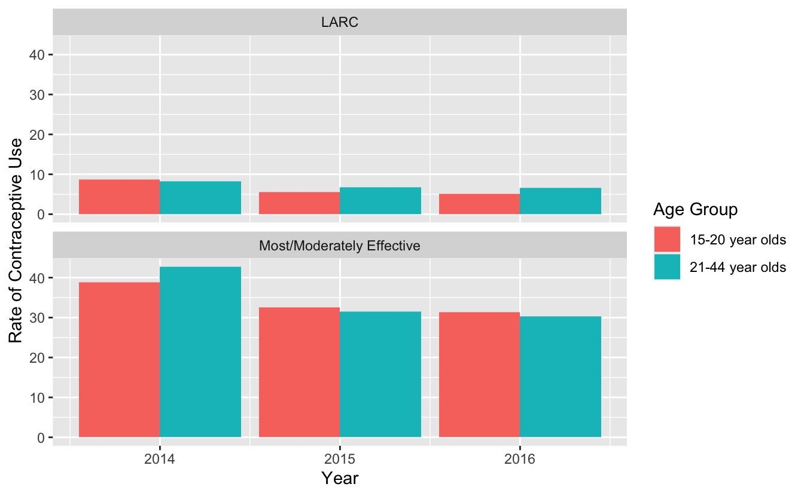

This is my PM566 Final Project website. Link to the report pdf will go here:
The Contraceptive Care - All Women measure (CCW), as part of the Maternal and Infant Health Initiative, Contraceptive Care Quality grant, was compiled data taken from eligible women ages 15-44 who are at risk for unintended pregnancy. It reported the rates of women’s contraceptive use broken down by year (2014-2016), age group (15-20 vs. 21-44), and race. Contraceptive type either fell under the category of long-acting reversible methods of contraception (LARC), such as birth control implants or IUDs, or most/moderately effective methods of contraceptions (M/M), such as oral birth control pills, patches, rings, injectables, female sterilization, or diaphragms.
LARC contraceptives are more effective forms of birth control than M/M methods and are safe for women of all ages to use. LARC methods could prevent more cases of teenage pregnancy for young women at risk and who are sexually active. However, M/M methods are more widely used and may be perceived by the public to be safer since they don’t require surgical insertions of long-term devices into the body. Young women with inadequate knowledge about sex education and reproductive health may not have not received enough information about the different available contraceptive methods and as a result, be unable to make an informed decision on the contraceptive type that’s right for them.
The research question being explored in this research project is if adolescents (ages 15-20) use long-acting reversible methods of contraception (LARC) at a lower rate than older women (ages 21-44) and is that trend consistent throughout the three year period?
if (!file.exists("contraceptive_use.csv")) {
download.file("https://data.chhs.ca.gov/dataset/c2698502-d276-4e55-9057-8153e39d21b1/resource/12a73f54-dcf4-4e38-843c-e988385be69b/download/ofp-ccw-by-race-ethn_contra-type_age-group_14-16.csv", "contraceptive_use.csv", method="libcurl", timeout = 60)
}
contra <- data.table::fread("contraceptive_use.csv") #remove the '%' symbol in the dataset
contra$`Rate of Contraceptive Use` <- stringr::str_remove_all(contra$`Rate of Contraceptive Use`, "%")
#column was changed from a character variable to numeric
contra$`Rate of Contraceptive Use` <- as.numeric(contra$`Rate of Contraceptive Use`)
#average rate by Contraceptive Type, Age Group and Year
avg_contra <- contra[ , .(
avg_rate = mean (`Rate of Contraceptive Use`)
),
by = .(`Contraceptive Type`, `Age Group`, Year)]
avg_contra## Contraceptive Type Age Group Year avg_rate
## 1: Most/Moderately Effective 15-20 year olds 2014 38.765000
## 2: LARC 15-20 year olds 2014 8.635000
## 3: Most/Moderately Effective 21-44 year olds 2014 42.683333
## 4: LARC 21-44 year olds 2014 8.290000
## 5: LARC 21-44 year olds 2015 6.785714
## 6: Most/Moderately Effective 15-20 year olds 2015 32.613333
## 7: LARC 15-20 year olds 2015 5.605000
## 8: Most/Moderately Effective 21-44 year olds 2015 31.471667
## 9: Most/Moderately Effective 15-20 year olds 2016 31.408333
## 10: LARC 15-20 year olds 2016 5.156667
## 11: Most/Moderately Effective 21-44 year olds 2016 30.286667
## 12: LARC 21-44 year olds 2016 6.576667p1_bar <- avg_contra %>%
ggplot()+
geom_col(mapping=aes(x= Year, y= avg_rate, fill = `Age Group`), position = "dodge") +
labs( y = "Rate of Contraceptive Use") +
facet_wrap( ~ `Contraceptive Type`, nrow=2)
ggplotly(p1_bar)These bar graphs depict the rate of contraceptive use by age group and contraceptive type throughout the 3 year period. Most/Moderately Effective methods are used by both age groups almost 4 times more frequently than LARC methods. The trend between age groups are not consistent throughout the years. In 2015 and 2016, older women use LARC methods at a higher rate than the younger age group.

These bar graphs depict the rate of contraceptive use by age group and contraceptive type throughout the 3 year period. Most/Moderately Effective methods are used by both age groups almost 4 times more frequently than LARC methods. The trend between age groups are not consistent throughout the years. In 2015 and 2016, older women use LARC methods at a higher rate than the younger age group.
Copyright © 2022, Megan Tran.